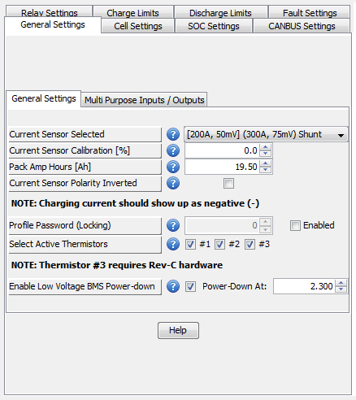

These settings deal with general options related to the battery pack as a whole.
Associated Parameters:
Current Sensor Selected
Multi-Purpose Input/Output Functions
Pack Amphours
Current Sensor Polarity Inverted
Profile Password (Locking)
Active Thermistors
Enable Low Voltage BMS Powerdown